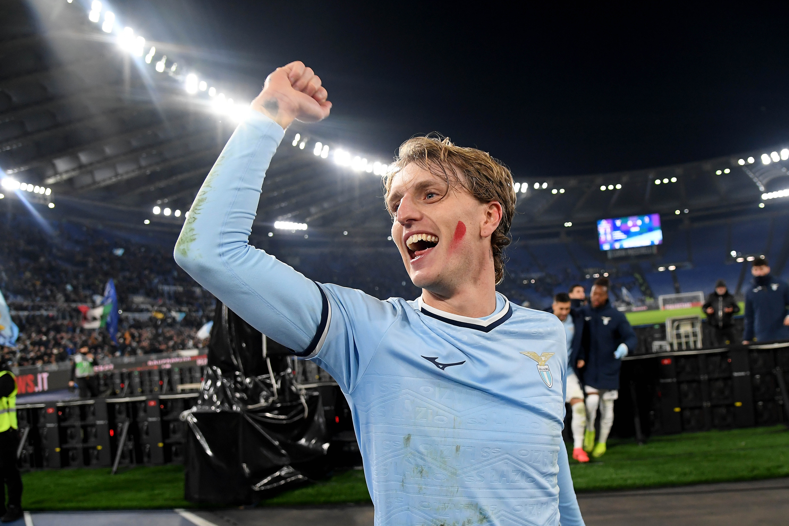

Nocolo Rovella
- Apps: 1-(1)
- Totla Minutes: 114
- Expected assists: 0.90 /90
- Touches: 142
- Assists: 1
- Key Passes: 4.5 /90
- Long Balls: 3 /90
- Av Raring: 8.9
- Pass Accuracy: 90%
Although Nicolò Rovella has featured in only two matches — starting in one and coming on as a late substitute in the other — he has already produced exceptional numbers across 114 total minutes on the pitch.
Creativity & Vision: With an expected assists (xA) of 0.90 per 90 minutes and 4.5 key passes per 90, Rovella showcased remarkable playmaking ability. His awareness and vision allowed him to unlock defenses and create high-quality chances.
Distribution & Control: Recording 142 touches in limited time highlights his confidence and influence in possession. A 90% passing accuracy, alongside 3 accurate long balls per 90, reflects both composure in short combinations and the ability to expand play when needed.
End Product: He not only impressed in underlying data but also registered a direct assist, confirming his effectiveness in decisive attacking moments.
Overall Impact: Achieving an average rating of 8.9 across just over a match’s worth of minutes, Rovella has positioned himself as a midfielder capable of dictating tempo, creating opportunities, and delivering in key moments.
➡️ With such a strong statistical impact in very limited time, Nicolò Rovella is definitely a player to keep under close watch this season.